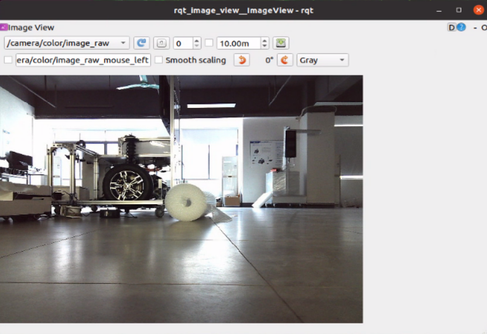
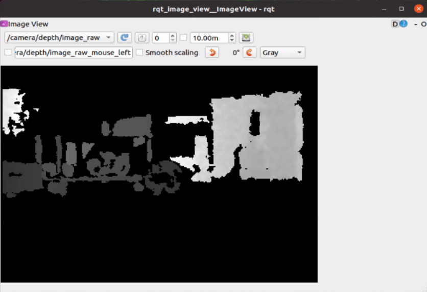

📷 Depth Camera Driver Setup
⚠️ This feature is only available on RobiS models equipped with a depth camera.
🚀 Start the Depth Camera Driver
Open a new terminal and run the following command:
roslaunch astra_camera astra_pro_plus.launch
This launches the driver for the Orbbec Astra Pro Plus depth camera, initializing the image and depth data streams.
🖥️ View Image Streams with rqt
To visualize camera outputs including RGB, depth, and IR:
- Open a new terminal
- Run:
rosrun rqt_image_view rqt_image_view
- In the GUI that appears, select the desired topic:
/camera/rgb/image_raw/camera/depth/image_raw/camera/ir/image_raw
This tool allows you to verify that the camera is publishing all necessary data streams.


💡 Tip: If no image appears, ensure that the camera is physically connected and that the driver launch was successful.
Let us know if you'd like to visualize point clouds or use the camera in SLAM/localization tasks!